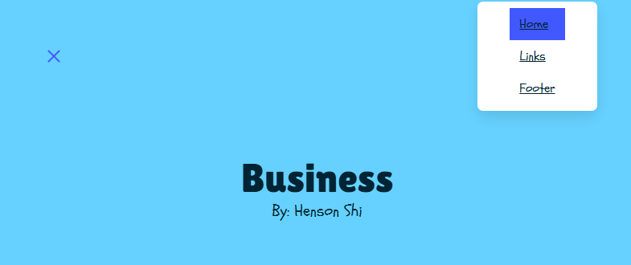

Freedom Project
Content:
In this project, we picked out a field of interest in which we researched both present technology and came up withour own "future invention" that could exist in the future. We did this through our freedom project, a website madeusing a tool we learned as well as everything we learned up to that point including html, css and more. As the name states, we had absolute freedom when making this project other then a few criterias we were to fill out via the rubric.
Context:
My field of interest/topic was Business. Im not entirely interested in business but at the time we had to pick something and that was the most appealing to me at that point. Earlier in the year, we were tasked with compiling information meaning when we actually started the project, we had all the content beforehand and only needed work on adding them to a website as well as formatting it in ta way that was appealing. My tool, [Bulma](https://bulma.io/) helped a lot with this being a CSS Framework meaning it was made to help with how the website looked. We were also tasked to make a wireframe to help plan how our project would look.
Challenges:
There were a lot of challenges during this project which I will explain in this section although having pre prepped the content really made a difference with what I had to focus on.
Challenge #1: Navbar
The navbar I decided to use was a Bulma navbar but was very different. Instead of going into the navnar section, I actually used one that was pre implemented within a Hero Banner which though really cool ended up being very confusing when debugging. The normal navbar was fine but the burger-navbar(Appears in mobile layout) wasn't working very well. Though the code was there, the burger wasn't actually connected to the actual navbar meaning it didn't work. For some reason the Bulma website didn't talk a lot about this but I was able to fix this with AI who helped me find how to connect the navbar and burger. That wasn't the only issue, the burger navbar's background was pitch black making it unreadable with my black font color. This one was a lot more straight forward but took me some time to figure out. Using the inspect tool, I was able to find which class determined the background and change the color myself via CSS.
Challenge #2: Images
Adding the images to the website was quite easy having them already preppared but getting them to look okay was very difficult. Because we had to make our website responsive (different apperaance based on screen size), the images never looked alright on every single screensize, the images would be too small, too faraway from the text or outright not stay within its container. On top of that, I was attempting to use Bulma's grid system which I was way less experienced then that of bootstrap. I was able to solve this problem by figuring out how to implement margin as auto, this meant that the margin was based on its container and would automatically adjust when changed.
Takeaways
Some takeaways regarding the project was definetly how it's okay to use AI as long as it doesn't make your project. Some of my challenges weren't very common meaning even my teacher wasn't able to help me. I was able to solve these through AI in which they guided me through what was wrong and how to fix it. This saved me a lot of time of randomly typing in hopes of something working and let me be prepared for if that issue happened again.
Another takeaway I had was time management. Being a solo project, I had to do everything myself meaning things would take longer. Going back to challenges, I didn't progress very much because I was stuck on the problems meaning I lost a lot of time doing so. Some of the stuff were also not neccesary for my project but it was just me wanting it to work because it looked cool. Something like that could've been touched on later and maybe would've helped me better polish the stuff that acutally mattered for my grade.
Next Step
Being our final project of the year, I do believe I did quite well on my project. I learned a lot and look forward to my next year where I'll learn more ideas that I can implement in future projects. I do believe that this project has helped me a lot being able to use everything I learned together in one place.
Wireframe (Desktop)Wireframe (Mobile)
Preview of Project

My Hero Banner with Burger